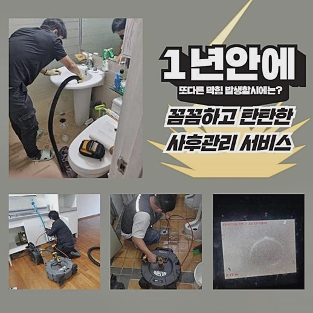
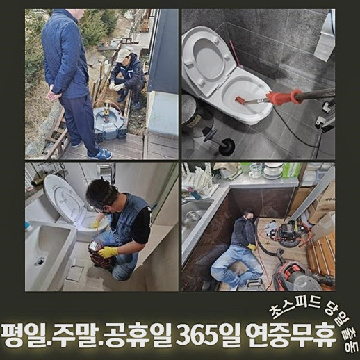
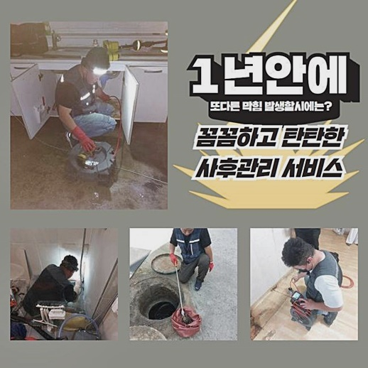
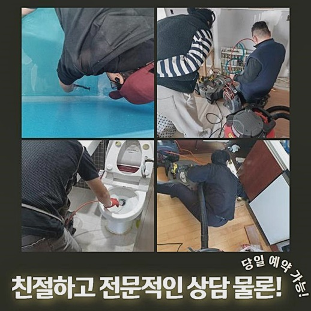
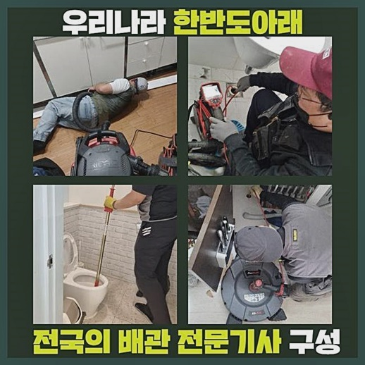
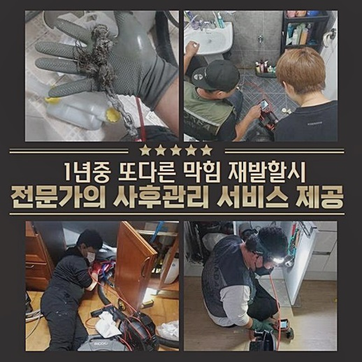
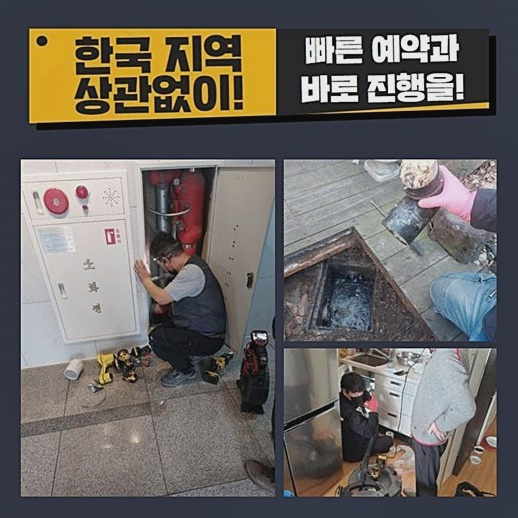

🏠 관악구 낙성대동화장실뚫음 난곡동 하수구뚫어주는곳 누수
용인시 처인구 배관막힘 전문 시공 후기

📋 작업 개요
- 위치: 용인시 처인구, 수원시 영통구, 화성시 동탄
- 서비스 유형: 배관막힘, 누수수리, 고압세척, 내시경점검
- 작업 일시:
- 업체명: 하수구수사대 (010-5615-2118)
🔍 문제 상황
관악구 낙성대동화장실뚫음 난곡동 하수구뚫어주는곳 누수
배관막힘이 생겼을 시 독자님들은 어떤 계획으로 말썽을 잠재우려 하나요
많은 분께서 자발적인 기술력을 통해 개통해보려는 작업을 하고 있어요
플라스틱 막대나 구두주걱 등을 사용하거나 비닐류를 반영해볼 수도 있겠죠
이런 것들이 아예 효과가 없다고는 말씀드리기 힘들지만 오히려 장애를 심화시킬 수 있어 무리한 시도는 억제하시는 게 마땅한 결정입니다
악화가 심해진다면 파이프를 들어내버려야 되는 형국을 마주할 수도 있다는 점을 기억해주세요
금번엔 실제현장의 모습을 활용하여 배관막힘과 관련하여 제시해드릴 계획이니 어느정도의 시간만 할애해 주신다면 나중의 큰 부조가 될 수 있을 거예요
하수관 쪽으로는 여러가지 성분들이 흘러들어가 미세물질들이 손쉽게 적체될 수가 있죠
원형의 구멍에 이런 이물 누증이 계속되면 관 정체에서 끝나는 것이 아니라 관의 구조적인 형태도 변모할 수 있다는 점을 주목하셔야 합니다
해당 사안으로 쉽게 만날 수 있는 손실론 배관물의 역행이나 악취 등을 들 수 있습니다
이런일들이 일어나기 전 철저한 예방적 태도를 가지고 생활해 나가야 갑작스레 사용하지 못하는 사태를 막아낼 수가 있는 것입니다
이러한 기본적인 내용의 숙지 미비로 인해 급히 우리를 찾은 분들이 정말 많답니다

🔎 원인 분석
💡 전문가 진단: 정밀 진단 장비를 사용하여 슬러지의 고착 여부를 판명하고 타격/세척 작업을 실시했습니다.
이번 글에서 말씀해드릴 처소도 파이프에 일어난 사안으로 빠른 수리를 요망하며 전화주셨답니다
집 내부에 있는 화장실에서 배관막힘이 일어난 것이었고 다른 배관쪽에서는 물이 넘치는 상황이 발생하고 있었기에 재빠르게 출발해서 사태를 잠재우기로 마음 먹었답니다
해당 현장은 다목적 건조물이었고 커피숍과 편의점 등이 1층에 있었어요
상가의 상부를 올려보니 배수시설이 노출된 상태로 설비된 모습을 보였어요
다양한 곳에서 하수관 정체가 동시다발적으로 일어나고 있다는 사실을 파악 후 바깥의 배관부터 처리하기로 결단을 내렸어요
밖에서부터 집 내부의 배수관 편으로 배관 세척을 단행해 나갔답니다
그것은 배수관 시스템은 가정에서 쓴 물이 외부의 파이프까지 접합된 상황이기 때문에 한 부분이 정체되면 다른쪽에서 고장이 일어날 수 있기 때문입니다
그런 이유로 전체적인 보수가 요망되는 것이었죠
의뢰자댁에서 사시는 거주자께서는 욕실 내에서 샤워나 세안을 하게되면 싱크대쪽 및 욕실 내부의 양방향에서 물이 토출되는 상황이 목격되는 사태였는데요
주 배관설비 중 어떤 쪽에서 말썽이 생겨서 그 부분과 결속된 배관 역시 동시에 문제가 생긴 결과로 예측할 수가 있었습니다
이렇게 배수구가 갑작스레 막힌다면는 단순하게 막혀버린 지점만 뚫어내는 게 아닌 총체적인 파이프 세정이 필요합니다
일부분의 슬러지만 소멸시키는 것으로 완료하면 다른 배관쪽에서 막힘 현상이 재차 발생할 확률이 높아서 배수시스템 내부의 이물을 전부 제거하는 시공이 불가결한 것입니다
관이 노후되거나 이물들로 훼손되면 액체가 지나갈 공간이 비좁아지고 물이 빠져나가는 속력이 느려지게 되어 물이 바깥으로 토출되는 지경까지 다다를 수 있는겁니다

🔧 작업 과정
본 지점은 차단이 일어난 부분이 바깥으로 노현되어 있는 파이프였답니다
그에 따라 상가의 천장쪽부터 수리를 이행하기로 마음먹었고 간혹 발발할 수 있는 오수누출 등의 상황에 대응하여 보호지로 주변을 커버하였어요
파이프관 일부에 구멍을 뚫고 내부의 소제를 시작하는 것이죠
노출된 하수관에서 안쪽방향으로 세정을 감행하고 그 뒤 반대의 순서로 청소를 진행해 보았습니다
양방향에서 세척을 하게 되면 말끔하고 효과적인 작업이 됩니다
개별적인 상황에 의거해서 공사하는 시도를 다양화할 수 있답니다
전체 배수시스템의 성격을 알아내고 세부적 사안을 정밀하게 검토하고 시공하는 거라 위험성을 떨어트린 상태로 막힌 배관을 실행할 수 있습니다
1층의 상가천장에 붙은 파이프의 일부분에 낸 곳을 중심으로 내방쪽에서는 플렉스샤프트라는 기기를 가동하여 배관 내부를 세척하기로 하였어요
해당 기구는 배관 소제에 필수적인 물건으로 쇠사슬 모양으로 이루어진 머릿부분이 하수관 안을 전반적으로 훑으면서 잔재들을 제거해 나갑니다
흐름이 멈춘 지점을 해결한 뒤 섬세한 분쇄업무를 실행하기 위해서 내시경기기를 넣어 내측의 상태를 관찰해 나가면서 배관 소제를 실시하였어요
오로지 뚫음에만 몰입하지 않았고 바깥 배수관까지 연결된 곳이 완벽하게 해결되는 걸 목표물로 정해놓고 양 지점에서 클리닝 작업을 지속적으로 진행하여야 했답니다
건물 1층에 노출된 배수관의 규모가 컸기 때문에 한쪽 방면에서만 수선하는 선택보다는 여러 곳에서 트라이해보는 것이 한층 빠른 결과를 만날 수 있죠
수차례 세척을 하니 금새 깔끔해진 배관의 내부를 목격할 수가 있었습니다
문제의 화장실로 위치를 옮겨 배수테스트를 진행해 보았습니다
관내의 정체가 해소되고 고착화된 물질들까지 제거되었다면 이전과 같이 주방배관쪽으로 역류증상이 안 나타나고 외부쪽으로 온전히 배출되는 것입니다
주방공간을 포함하여 문제가 생겼던 배수구쪽에서 이상여부를 판독하였는데 전과 같은 문제가 나타나지 않고 속시원하게 사용한 물이 소멸되었기에 통수관련한 수선을 흡족하게 마무리지을 수 있었습니다
막힌 부분을 처리하기 위해선 전반적인 설비 이해도가 있는 상태에서 시행하는 게 중요합니다
간혹 온전한 지점까지 망가뜨릴수 있기에 숙련도가 높은 기술자가 필요한 것입니다
하수관쪽에서 파손 등이 생기면 큰 돈이 나올 수가 있어 큰 일이 터지기 전 주기적으로 돌보아서 배관을 장기적으로 쓰시는 게 좋을 것 같습니다
이물이 고착화되기 전에 세척이 지속된다면 물넘침 현상이나 악취가 나는 등의 상황을 피하고 청결하게 생활하실 수 있어요


✅ 작업 완료
배관내시경을 이용한 관측에서부터 개문을 하는 업무까지 연계된 사안에 대해선 저희팀이 항시 선봉장에 서 있어요
신뢰감있는 업체를 찾고 계신 와중이라면 예약한 시간에 정확하게 방문해드리는 저희에게 의뢰해 주시길 바랍니다
지역을 망라하고 내방을 이행하고 있으며 별도 방문비용을 존재하지 않아서 편안하게 무료견적을 밟아나가실 수 있죠
거기에 더해 시공과 관련한 내역을 세세히 알려드려서 의뢰인분의 염려를 우선적으로 없애드리고 있으니 믿고 연락해 주셔도 돼요
현재까지 알려드렸던 사안에 해당하지 않지만 의문나는 건이 마음속에 있으시면 개의치 말고 연락 부탁드려요




⚠️ 하수구 배관 막힘 예방 및 관리 가이드
- ✅ 머리카락, 비닐, 물티슈 등 물에 분해되지 않는 이물질은 절대 흘려보내지 마세요.
- ✅ 기름기 많은 식기는 설거지 전 키친타올로 먼저 기름때를 닦아내세요.
- ✅ 주기적으로 배수구에 뜨거운 물을 가득 부어주어 유지방 고착을 방지하세요.
- ✅ 작업 후 1년 이내 재발 시 무상 A/S 보증 서비스를 제공합니다.
💡 핵심 정리
- 확실한 장비 작업(내시경 점검 및 샤프트 스케일링)으로 원인을 뿌리 뽑습니다.
- 작업 후 1년 이내에 동일한 부위 재발 시 100% 무상 A/S 서비스를 보장합니다.
- 서울 · 경기 · 인천 전 지역에 24시간 언제든 긴급 출동할 수 있도록 항시 대기 중입니다.
❓ 자주 묻는 질문 (FAQ)
🚨 용인시 처인구 배관막힘 문제로 고민이신가요?
정확한 원인 진단과 확실한 시공으로 재발 없는 해결을 약속드립니다.
24시간 긴급 출동 | 서울 · 경기 · 인천 전지역 | 1년 내 재발 시 무상 A/S